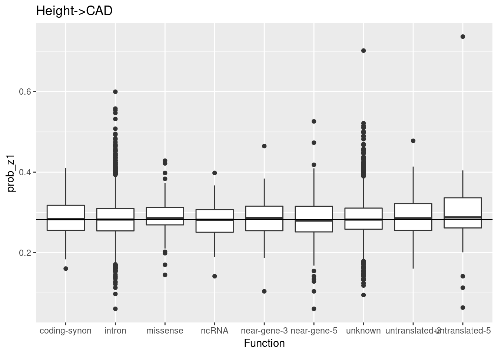
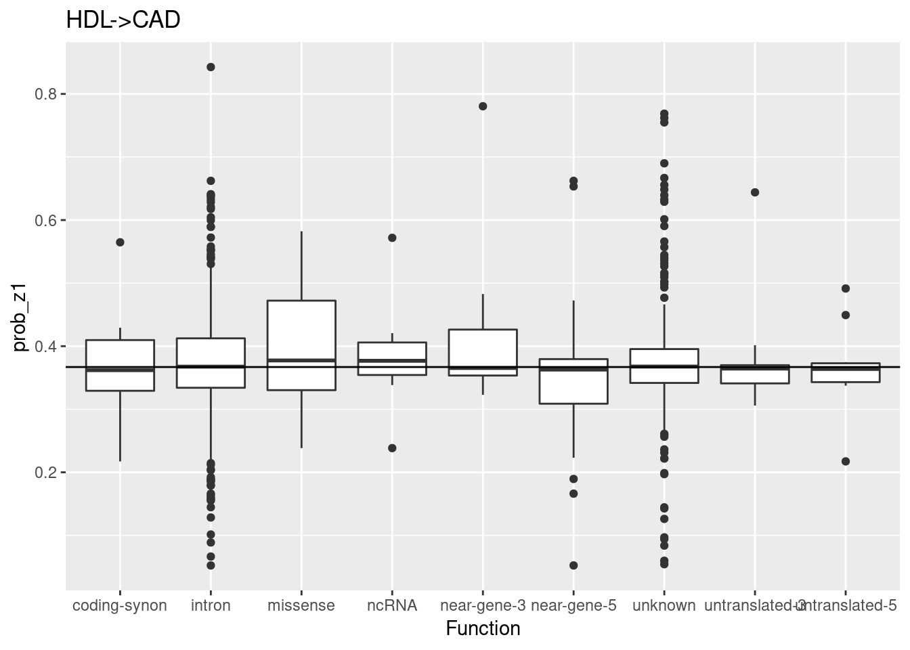
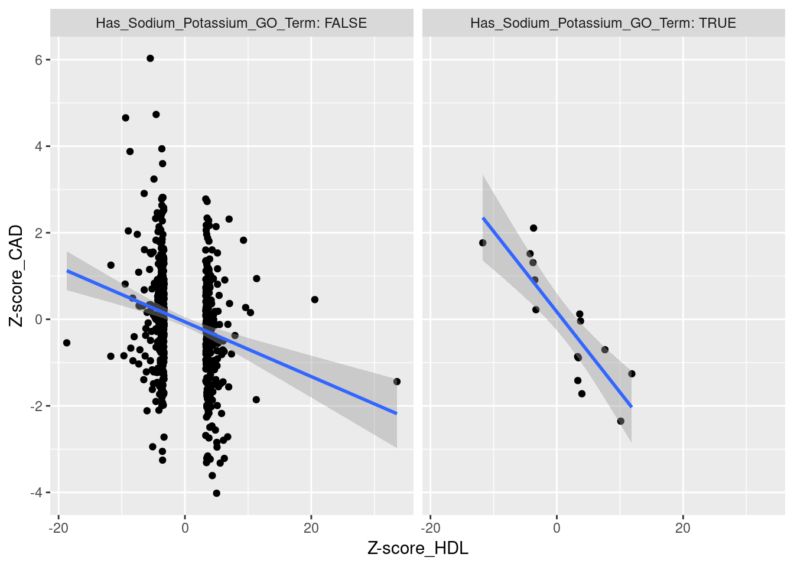
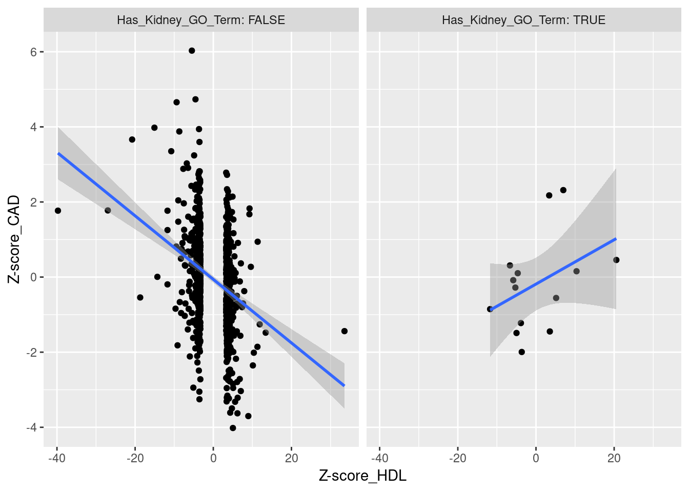

Last updated: 2018-09-04
workflowr checks: (Click a bullet for more information) ✖ R Markdown file: uncommitted changes
The R Markdown is untracked by Git. To know which version of the R Markdown file created these results, you’ll want to first commit it to the Git repo. If you’re still working on the analysis, you can ignore this warning. When you’re finished, you can run wflow_publish to commit the R Markdown file and build the HTML.
✔ Environment: empty
Great job! The global environment was empty. Objects defined in the global environment can affect the analysis in your R Markdown file in unknown ways. For reproduciblity it’s best to always run the code in an empty environment.
✔ Seed:
set.seed(12345)
The command set.seed(12345) was run prior to running the code in the R Markdown file. Setting a seed ensures that any results that rely on randomness, e.g. subsampling or permutations, are reproducible.
✔ Session information: recorded
Great job! Recording the operating system, R version, and package versions is critical for reproducibility.
✔ Repository version: 35139b4
wflow_publish or wflow_git_commit). workflowr only checks the R Markdown file, but you know if there are other scripts or data files that it depends on. Below is the status of the Git repository when the results were generated:
Ignored files:
Ignored: .RData
Ignored: .Rhistory
Ignored: .Rproj.user/
Ignored: .httr-oauth
Ignored: analysis/PolygenicEstimation_cache/
Ignored: analysis/figure/
Ignored: code/.Rhistory
Ignored: code/scripts/.Rhistory
Ignored: code/snakemake_files/.Rhistory
Ignored: code/snakemake_files/.snakemake/
Ignored: code/snakemake_files/parameter_generation/
Ignored: code/snakemake_files/subset_data_pipeline/.RData
Ignored: data/rep_polygenic/
Untracked files:
Untracked: _workflowr.yml
Untracked: analysis/#RSSp_WTCC_noConfounding.Rmd#
Untracked: analysis/AFvsp.Rmd
Untracked: analysis/ChunkingEffect.Rmd
Untracked: analysis/ChunkingLD.Rmd
Untracked: analysis/DownSamplingResults.Rmd
Untracked: analysis/EVD_SVD.Rmd
Untracked: analysis/GRM_estimation.Rmd
Untracked: analysis/GenomeWideSimulation.Rmd
Untracked: analysis/Heritability.Rmd
Untracked: analysis/LDshrink_effect.Rmd
Untracked: analysis/MeetingSummary1.Rmd
Untracked: analysis/RSSR_PolygenicData.Rmd
Untracked: analysis/RSSp.stan
Untracked: analysis/RSSp2.stan
Untracked: analysis/RSSp_LDshrink.Rmd
Untracked: analysis/RSSp_Large_WTCC_noConfounding.Rmd
Untracked: analysis/RSSp_Largest_Simulation.Rmd
Untracked: analysis/RSSp_WTCC_noConfounding.Rmd
Untracked: analysis/RSSp_ldsc_highPVE_chr1.Rmd
Untracked: analysis/RSSp_ldsc_highPVE_hr.Rmd
Untracked: analysis/RSSp_ldsc_noConfounding.Rmd
Untracked: analysis/Running_ldetect.Rmd
Untracked: analysis/SPVE.Rmd
Untracked: analysis/SharedSNPAnalysis (dell-desktop's conflicted copy 2018-09-04).Rmd
Untracked: analysis/SharedSNPAnalysis.Rmd
Untracked: analysis/Summary.Rmd
Untracked: analysis/Summary.org
Untracked: analysis/Vanilla_LDSC.Rmd
Untracked: analysis/chr_16.Rmd
Untracked: analysis/derby.log
Untracked: analysis/eQTL_Pipelines.Rmd
Untracked: analysis/fquh_mod.RDS
Untracked: analysis/importFramExp.Rmd
Untracked: analysis/ltximg/
Untracked: analysis/nquh_mod.RDS
Untracked: analysis/out_res.RDS
Untracked: analysis/pvv_opt.Rmd
Untracked: analysis/quh_mod.RDS
Untracked: analysis/scz_data.org
Untracked: analysis/shrinkage_effect.Rmd
Untracked: code/.ipynb_checkpoints/
Untracked: code/RSSp_abstract.org
Untracked: code/RSSp_abstract_notes.org
Untracked: code/RSSp_talk_notes.org
Untracked: code/RSSp_talk_notes.pdf
Untracked: code/RSSp_talk_notes.tex
Untracked: code/Untitled.ipynb
Untracked: code/Untitled1.ipynb
Untracked: code/ideas.org
Untracked: code/ltximg/
Untracked: code/rssp.yml
Untracked: code/scripts/#compare_eqtl.R#
Untracked: code/scripts/RSSp_ldsc_results.Rmd
Untracked: code/scripts/bin/
Untracked: code/scripts/compare_eqtl.R
Untracked: code/scripts/ldsc_rssp.Rmd
Untracked: code/scripts/matlab2h5.py
Untracked: code/scripts/vcf-liftover.sh
Untracked: code/scripts/vcf2allel.py
Untracked: code/snakemake_files/environment_rssp.yml
Untracked: code/snakemake_files/eqtl_check.RDS
Untracked: code/snakemake_files/kg_snakefile~
Untracked: code/snakemake_files/ldsc/
Untracked: code/snakemake_files/plink.log
Untracked: code/snakemake_files/rssp_ldsc_report/
Untracked: code/snakemake_files/temp_map_19.RDS
Untracked: code/snakemake_files/temp_target_19.RDS
Untracked: code/snakemake_files/vert.txt
Untracked: code/snakemake_files/vgcore.30188
Untracked: code/workflow_params.json~
Untracked: data/NCBI34_to_GRCh38.chain.gz
Untracked: data/SNP_ws.RData
Untracked: data/Snakemake_inputs/
Untracked: data/temp_ws.RData
Untracked: docs/#RSSp_WTCC_noConfounding.Rmd#
Untracked: docs/RSSp.stan
Untracked: docs/RSSp2.stan
Untracked: docs/Summary.org
Untracked: docs/derby.log
Untracked: docs/figure/LDshrink_effect.Rmd/
Untracked: docs/figure/RSSp_Large_WTCC_noConfounding.Rmd/
Untracked: docs/figure/RSSp_WTCC_noConfounding.Rmd/
Untracked: docs/figure/RSSp_ldsc_highPVE_chr1.Rmd/
Untracked: docs/figure/RSSp_ldsc_highPVE_hr.Rmd/
Untracked: docs/fquh_mod.RDS
Untracked: docs/log4j.spark.log
Untracked: docs/ltximg/
Untracked: docs/nquh_mod.RDS
Untracked: docs/quh_mod.RDS
Untracked: docs/scz_data.org
Untracked: dosage.scan.RData
Untracked: dosage.snp.RData
Untracked: output/RSSp_snakemake/
Unstaged changes:
Modified: .gitignore
Modified: analysis/DownsamplingResults2.Rmd
Modified: analysis/IndependenceCheck.Rmd
Modified: analysis/Meeting_Notes.Rmd
Modified: analysis/New_WholeGenome.Rmd
Modified: analysis/OutOfSampleLD.Rmd
Modified: analysis/PolygenicEstimation.Rmd
Modified: analysis/RSSP_standard_error.Rmd
Modified: analysis/RSSp_Chunksize_Investigation.Rmd
Modified: analysis/RSSp_Large_Simulation.Rmd
Modified: analysis/RSSp_Posterior.Rmd
Modified: analysis/RSSp_Prediction.Rmd
Modified: analysis/RSSp_ldsc.Rmd
Modified: analysis/RSSp_ldsc_gwas_direct_noConfounding.Rmd
Modified: analysis/RSSp_ldsc_highPVE.Rmd
Modified: analysis/SimulationPipeline.Rmd
Modified: analysis/_site.yml
Modified: analysis/about.Rmd
Modified: analysis/chr_2.Rmd
Deleted: analysis/chunks.R
Modified: analysis/index.Rmd
Modified: analysis/license.Rmd
Modified: analysis/lnzDist.Rmd
Modified: analysis/simulatingGWAS.Rmd
Modified: analysis/simulation.Rmd
Modified: code/TF_LDshrink.ipynb
Modified: code/dask_LDshrink.ipynb
Modified: code/snakemake_files/Snakefile
Modified: code/snakemake_files/param_snakefile
library(tidyverse)── Attaching packages ────────────────────────────────────────────────────────────────────────────────────────────────────────── tidyverse 1.2.1 ──✔ ggplot2 3.0.0 ✔ purrr 0.2.5
✔ tibble 1.4.2 ✔ dplyr 0.7.6
✔ tidyr 0.8.1 ✔ stringr 1.3.1
✔ readr 1.1.1 ✔ forcats 0.3.0── Conflicts ───────────────────────────────────────────────────────────────────────────────────────────────────────────── tidyverse_conflicts() ──
✖ dplyr::filter() masks stats::filter()
✖ dplyr::lag() masks stats::lag()#library(biomaRt)height_cad_f <- "~/Downloads/giant_height__cardiogram_cad_data.tsv"
hdl_cad_f <- "~/Downloads/gls_hdl__cardiogram_cad_data.tsv"
height_cad <- read_delim(height_cad_f,delim="\t")Parsed with column specification:
cols(
snp = col_character(),
beta_hat_1 = col_double(),
seb1 = col_double(),
beta_hat_2 = col_double(),
seb2 = col_double(),
prob_z1 = col_double()
)hdl_cad <- read_delim(hdl_cad_f,delim="\t")Parsed with column specification:
cols(
snp = col_character(),
beta_hat_1 = col_double(),
seb1 = col_double(),
beta_hat_2 = col_double(),
seb2 = col_double(),
prob_z1 = col_double()
)all_rsid <- rbind(select(hdl_cad,snp),select(height_cad,snp)) %>% distinct(snp) %>% rename(name=snp)#mysql --user=genome --host=genome-mysql.cse.ucsc.edu -A -N -D hg19 -e 'SELECT chrom, chromStart, chromEnd, name FROM snp144Common where name=\'rs10931091\''
con <- RMariaDB::dbConnect(RMariaDB::MariaDB(),host="genome-mysql.cse.ucsc.edu",username="genome",dbname="hg19")
variant_df <- tbl(con,"snp147")anno_df <- filter(variant_df,name %in% all_rsid$name) %>% collect()
anno_df <- mutate(anno_df,chrom=str_replace(chrom,pattern = "chr",replacement = ""))snpmart = biomaRt::useMart(biomart = "ENSEMBL_MART_SNP", dataset="hsapiens_snp")
mart_anno_df <- biomaRt::getBM(attributes = c('refsnp_id','allele','chrom_start','chrom_strand','clinical_significance','associated_gene','distance_to_transcript','polyphen_score','sift_score','ensembl_gene_stable_id','consequence_type_tv','consequence_allele_string'),
filters = c('snp_filter'),
values = list(anno_df$name),
mart = snpmart)
mart_anno_df <- rename(mart_anno_df,name=refsnp_id)full_anno_df <- left_join(anno_df,mart_anno_df) %>% select_if(~length(unique(.x))>1)Joining, by = "name"a_height_cad <- rename(height_cad,name=snp) %>% left_join(full_anno_df) %>% distinct(name,.keep_all=T) %>% mutate(funcl=str_split(func,pattern=",")) %>% unnest(funcl)Joining, by = "name"a_hdl_cad <- rename(hdl_cad,name=snp) %>% left_join(full_anno_df) %>% distinct(name,.keep_all=T) %>% mutate(funcl=str_split(func,pattern=",")) %>% unnest(funcl)Joining, by = "name"a_height_cad %>% ggplot(aes(x=funcl,y=prob_z1))+geom_boxplot()+geom_hline(aes(yintercept=median(prob_z1)))+ggtitle("Height->CAD")+xlab("Function")
a_hdl_cad %>% ggplot(aes(x=funcl,y=prob_z1))+geom_boxplot()+geom_hline(aes(yintercept=median(prob_z1)))+ggtitle("HDL->CAD")+xlab("Function")
ensembl = biomaRt::useMart("ensembl",dataset="hsapiens_gene_ensembl")
gene_df = biomaRt::getBM(attributes = c('ensembl_gene_id', 'go_id','hgnc_symbol','description','family','name_1006','namespace_1003'),
filters = 'ensembl_gene_id',
values = unique(full_anno_df$ensembl_gene_stable_id),
mart = ensembl)a_hdl_cad <- rename(a_hdl_cad,ensembl_gene_id=ensembl_gene_stable_id) %>% inner_join(gene_df) Joining, by = "ensembl_gene_id"a_hdl_cad <- a_hdl_cad %>% arrange(desc(prob_z1))
# go_ct <- group_by(a_hdl_cad,namespace_1003,name_1006,go_id) %>% summarise(n_genes=n_distinct(hgnc_symbol),n_tot=n(),mean_prob=mean(unique(prob_z1))) %>% ungroup() %>% arrange(desc(n_genes),desc(n_tot))
#
# filter(go_ct,namespace_1003=='biological_process',n_genes>10) %>% inner_join(a_hdl_cad) %>% ggplot(aes(x=mean_prob,y=prob_z1,group=mean_prob))+geom_boxplot()distinct(a_hdl_cad,name,beta_hat_1,seb1,beta_hat_2,seb2,prob_z1,hgnc_symbol) %>% arrange(desc(prob_z1))# A tibble: 541 x 7
name beta_hat_1 seb1 beta_hat_2 seb2 prob_z1 hgnc_symbol
<chr> <dbl> <dbl> <dbl> <dbl> <dbl> <chr>
1 rs6589565 -0.0854 0.0091 0.120 0.0258 0.843 BUD13
2 rs2954031 -0.0426 0.0049 0.0545 0.0140 0.667 ""
3 rs16963520 0.0719 0.0071 -0.0471 0.0200 0.662 SLC12A3
4 rs445925 -0.0983 0.0212 0.1 0.0429 0.653 ""
5 rs12740374 -0.0329 0.006 0.103 0.0171 0.644 CELSR2
6 rs863750 0.0318 0.0051 -0.0484 0.0151 0.641 ""
7 rs4765127 -0.0329 0.0051 0.0426 0.0146 0.639 ""
8 rs3924313 0.0352 0.0052 -0.0402 0.0148 0.637 SCARB1
9 rs12979104 0.0407 0.0094 -0.0927 0.0257 0.633 KANK2
10 rs16842 0.0307 0.0055 -0.0514 0.0155 0.632 ""
# ... with 531 more rowsdistinct(a_hdl_cad,name,beta_hat_1,seb1,beta_hat_2,seb2,prob_z1,hgnc_symbol,distance_to_transcript) %>% arrange(desc(prob_z1))# A tibble: 541 x 8
name beta_hat_1 seb1 beta_hat_2 seb2 prob_z1 distance_to_tra…
<chr> <dbl> <dbl> <dbl> <dbl> <dbl> <int>
1 rs65… -0.0854 0.0091 0.120 0.0258 0.843 3466
2 rs29… -0.0426 0.0049 0.0545 0.0140 0.667 12552
3 rs16… 0.0719 0.0071 -0.0471 0.0200 0.662 10754
4 rs44… -0.0983 0.0212 0.1 0.0429 0.653 2585
5 rs12… -0.0329 0.006 0.103 0.0171 0.644 782
6 rs86… 0.0318 0.0051 -0.0484 0.0151 0.641 46953
7 rs47… -0.0329 0.0051 0.0426 0.0146 0.639 1676
8 rs39… 0.0352 0.0052 -0.0402 0.0148 0.637 20088
9 rs12… 0.0407 0.0094 -0.0927 0.0257 0.633 7842
10 rs16… 0.0307 0.0055 -0.0514 0.0155 0.632 7024
# ... with 531 more rows, and 1 more variable: hgnc_symbol <chr>distinct(a_hdl_cad,name,beta_hat_1,seb1,beta_hat_2,seb2,prob_z1,hgnc_symbol,distance_to_transcript,name_1006) %>% arrange(desc(prob_z1)) %>% mutate(nak=str_detect(name_1006,'sodium')|str_detect(name_1006,'potassium')) %>% group_by(name) %>% summarise(nak=any(nak)) %>% ungroup() %>% rename(snp=name,Has_Sodium_Potassium_GO_Term=nak) %>% inner_join(hdl_cad) %>% ggplot(aes(x=beta_hat_1/seb1,y=beta_hat_2/seb2))+geom_point()+geom_smooth(method="lm")+facet_wrap(~Has_Sodium_Potassium_GO_Term,labeller = label_both)+ylab("Z-score_CAD")+xlab("Z-score_HDL")Joining, by = "snp"
gene_annotations <- group_by(gene_df,hgnc_symbol) %>% summarise(Has_Sodium_Potassium_GO_Term=any(str_detect(name_1006,'sodium')|str_detect(name_1006,'potassium')),
Has_Glomerulus_GO_Term=any(str_detect(name_1006,'glomerulus')),
Has_Kidney_GO_Term=any(str_detect(name_1006,'kidney')))kidney_k_na_df <- distinct(a_hdl_cad,name,beta_hat_1,seb1,beta_hat_2,seb2,prob_z1,hgnc_symbol,distance_to_transcript,name_1006) %>% arrange(desc(prob_z1)) %>%
mutate(nak=str_detect(name_1006,'sodium')|str_detect(name_1006,'potassium'),glom=str_detect(name_1006,'glomerulus')) %>%
group_by(name) %>%
summarise(nak=any(nak),glom=any(glom)) %>%
ungroup() %>%
rename(snp=name,
Has_Sodium_Potassium_GO_Term=nak,
Has_Glomerulus_GO_Term=glom) %>%
inner_join(hdl_cad) %>%
mutate(z_hdl=beta_hat_1/seb1,z_cad=beta_hat_2/seb2)Joining, by = "snp"kidney_df <- distinct(a_hdl_cad,name,beta_hat_1,seb1,beta_hat_2,seb2,prob_z1,hgnc_symbol,distance_to_transcript,name_1006) %>% arrange(desc(prob_z1)) %>%
mutate(nak=str_detect(name_1006,'kidney')|str_detect(name_1006,'kidney')) %>%
group_by(name) %>%
summarise(nak=any(nak)) %>%
ungroup() %>%
rename(snp=name,Has_Kidney_GO_Term=nak) %>% right_join(hdl_cad) %>% mutate(Has_Kidney_GO_Term=ifelse(is.na(Has_Kidney_GO_Term),FALSE,Has_Kidney_GO_Term)) %>%
mutate(z_hdl=beta_hat_1/seb1,z_cad=beta_hat_2/seb2)Joining, by = "snp"kidney_df %>% ggplot(aes(x=beta_hat_1/seb1,y=beta_hat_2/seb2)) +
geom_point() +
geom_smooth(method="lm") +
facet_wrap(~Has_Kidney_GO_Term,labeller = label_both) +
ylab("Z-score_CAD") +
xlab("Z-score_HDL")
nak_genes <- distinct(a_hdl_cad,name,beta_hat_1,seb1,beta_hat_2,seb2,prob_z1,hgnc_symbol,distance_to_transcript,name_1006) %>% arrange(desc(prob_z1)) %>%
mutate(nak=str_detect(name_1006,'sodium')|str_detect(name_1006,'potassium')) %>%
group_by(hgnc_symbol) %>%
summarise(nak=any(nak)) %>%
ungroup()distinct(a_hdl_cad,name,beta_hat_1,seb1,beta_hat_2,seb2,prob_z1,hgnc_symbol) %>%
group_by(hgnc_symbol) %>%
summarise(mean_pz=mean(prob_z1),n_s=n(),min_pz=min(prob_z1),max_pz=max(prob_z1)) %>%
arrange(desc(max_pz),desc(n_s)) %>%
filter(n_s>1,hgnc_symbol!="")# A tibble: 42 x 5
hgnc_symbol mean_pz n_s min_pz max_pz
<chr> <dbl> <int> <dbl> <dbl>
1 SLC12A3 0.492 4 0.375 0.662
2 SCARB1 0.395 5 0.197 0.637
3 C5orf67 0.469 3 0.359 0.618
4 LIPC 0.352 7 0.0523 0.604
5 GALNT2 0.477 2 0.364 0.589
6 LIPG 0.516 2 0.450 0.582
7 APOB 0.558 2 0.543 0.572
8 DNAH10 0.521 2 0.490 0.552
9 AFF1 0.451 2 0.363 0.538
10 CMIP 0.452 2 0.385 0.520
# ... with 32 more rowsdistinct(a_hdl_cad,name,beta_hat_1,seb1,beta_hat_2,seb2,prob_z1,hgnc_symbol) %>%
group_by(hgnc_symbol) %>%
summarise(mean_pz=mean(prob_z1),n_s=n(),min_pz=min(prob_z1),max_px=max(prob_z1)) %>%
arrange(desc(n_s),desc(mean_pz)) %>%
filter(n_s>1)# A tibble: 43 x 5
hgnc_symbol mean_pz n_s min_pz max_px
<chr> <dbl> <int> <dbl> <dbl>
1 "" 0.380 84 0.101 0.667
2 ALDH1A2 0.225 11 0.0542 0.376
3 NLRC5 0.342 9 0.166 0.519
4 ABCA1 0.218 9 0.0887 0.381
5 LIPC 0.352 7 0.0523 0.604
6 SCARB1 0.395 5 0.197 0.637
7 MYO5B 0.267 5 0.155 0.420
8 SLC12A3 0.492 4 0.375 0.662
9 C5orf67 0.469 3 0.359 0.618
10 CSGALNACT1 0.394 3 0.363 0.445
# ... with 33 more rowssessionInfo()R version 3.5.1 (2018-07-02)
Platform: x86_64-pc-linux-gnu (64-bit)
Running under: Manjaro Linux
Matrix products: default
BLAS/LAPACK: /opt/intel/compilers_and_libraries_2018.1.163/linux/mkl/lib/intel64_lin/libmkl_gf_lp64.so
locale:
[1] LC_CTYPE=en_US.UTF-8 LC_NUMERIC=C
[3] LC_TIME=en_US.UTF-8 LC_COLLATE=en_US.UTF-8
[5] LC_MONETARY=en_US.UTF-8 LC_MESSAGES=en_US.UTF-8
[7] LC_PAPER=en_US.UTF-8 LC_NAME=C
[9] LC_ADDRESS=C LC_TELEPHONE=C
[11] LC_MEASUREMENT=en_US.UTF-8 LC_IDENTIFICATION=C
attached base packages:
[1] stats graphics grDevices utils datasets methods base
other attached packages:
[1] bindrcpp_0.2.2 forcats_0.3.0 stringr_1.3.1 dplyr_0.7.6
[5] purrr_0.2.5 readr_1.1.1 tidyr_0.8.1 tibble_1.4.2
[9] ggplot2_3.0.0 tidyverse_1.2.1
loaded via a namespace (and not attached):
[1] Biobase_2.40.0 httr_1.3.1 bit64_0.9-7
[4] jsonlite_1.5 R.utils_2.6.0 modelr_0.1.2
[7] assertthat_0.2.0 stats4_3.5.1 blob_1.1.1
[10] cellranger_1.1.0 yaml_2.2.0 progress_1.2.0
[13] pillar_1.3.0 RSQLite_2.1.1 backports_1.1.2
[16] lattice_0.20-35 glue_1.3.0 digest_0.6.16
[19] rvest_0.3.2 colorspace_1.3-2 htmltools_0.3.6
[22] R.oo_1.22.0 plyr_1.8.4 XML_3.98-1.16
[25] pkgconfig_2.0.2 broom_0.5.0 biomaRt_2.36.1
[28] haven_1.1.2 scales_1.0.0 whisker_0.3-2
[31] git2r_0.23.0 IRanges_2.14.11 withr_2.1.2
[34] BiocGenerics_0.26.0 lazyeval_0.2.1 cli_1.0.0
[37] magrittr_1.5 crayon_1.3.4 readxl_1.1.0
[40] memoise_1.1.0 evaluate_0.11 R.methodsS3_1.7.1
[43] fansi_0.3.0 nlme_3.1-137 xml2_1.2.0
[46] tools_3.5.1 RMariaDB_1.0.6 prettyunits_1.0.2
[49] hms_0.4.2 S4Vectors_0.18.3 munsell_0.5.0
[52] AnnotationDbi_1.42.1 compiler_3.5.1 rlang_0.2.2
[55] grid_3.5.1 RCurl_1.95-4.11 rstudioapi_0.7
[58] bitops_1.0-6 labeling_0.3 rmarkdown_1.10
[61] gtable_0.2.0 DBI_1.0.0 curl_3.2
[64] R6_2.2.2 lubridate_1.7.4 knitr_1.20
[67] utf8_1.1.4 bit_1.1-14 bindr_0.1.1
[70] workflowr_1.1.1 rprojroot_1.3-2 stringi_1.2.4
[73] parallel_3.5.1 Rcpp_0.12.18 dbplyr_1.2.2
[76] tidyselect_0.2.4
This reproducible R Markdown analysis was created with workflowr 1.1.1